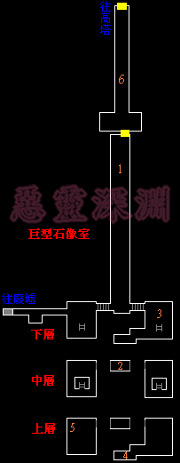
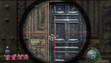
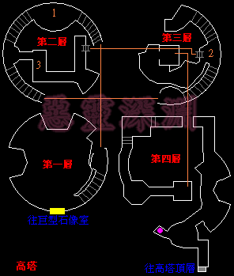
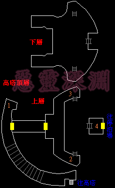
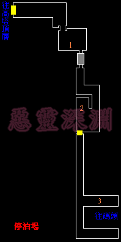

|
惡靈古堡～惡靈古堡４----地圖攻略～4-4
|
|
攻略內容以Normal為主，地圖上的紫色圓點●表示高價寶物的位置 ，標綠色的道具則是過關必須的重要道具。
 巨型石像室看似平靜，但是一旦玩家接近編號1的地方時，就會有邪教徒出現將通路阻斷，為了要重新接通通路，玩家必須先到中 層，跳到編號2的平台啟動巨型石像的開關，或是用槍枝射擊開啟，接著利用巨型石像的兩隻手部移動到上層，打開石像後方編號4 處的開關，來改變巨型石像手部的移動方向，藉此跳到對面啟動編號5的機關。最後剩下下層編號3的開關了，從中層下去，打開開 關。編號3、5的機關都打開後，通路就完成了。在這個過程中有許多邪教徒會陸續出現，可以使用梯子戰法來應對。 通路完成後，前進時得有心理準備，用來福槍來觀察，遠方的門上有鎖，雖說待會有足夠的時間來破壞，但現在也可以先破壞。
 前進後Sazalar的巨型石像會開始活動，要利用按鍵來躲避，到達底部時要趕緊用小刀把門上的鎖擊破，在編號6的橋上則要按複合按 鍵來迴避。
 好不容易抵達高塔，碰到了Salazar和他的跟班，劇情結束後先在第一層找找道具，然後開始往上。 到編號1時，在第三層編號2位置的邪教徒會操作手把投下火藥木桶，木桶會隨迴旋梯滾下來，盡量避免被砸到，沒有著火的木桶用 小刀來擊破！可以選擇在空檔一口氣衝到編號2打倒邪教徒，或是走編號3的木橋避開火藥木桶的路線。 到編號2時，對面會有邪教徒開始投擲火藥，下層也會出現支援的邪教徒，儘早解決以免被夾攻，也可以利用手把投下火藥木桶攻 擊從下層上來的邪教徒。 搭上第三層的升降梯，升降梯卻因為過重而無法啟動，把升降梯上的兩個箱子推落，再啟動開關即可。升降梯上升的過程中會有好 幾批邪教徒跳上來，因為戰鬥空間狹小，最好換上散彈槍。如果升降梯上有太多邪教徒，就會超重無法繼續上升。 順利到第四層時，拿取高價寶物金の腕輪（金的手環），然後前往高塔頂層。
 編號1有武器商人可以整理裝備，待會有場激戰，考慮一下是否要買火箭砲。進入上層後，Sazalar將自己賣給了疫生獸，成為怪物， 他的構造分為頭部、核心、觸手三部份，頭部即為中央有長長脖子的部份，殺傷力很大；核心在頭部後面，也是Salazar所在處，沒 有攻擊能力；觸手左右兩邊皆有。戰鬥開始後最好不要待在原地，建議前往編號2或是3的角落，如此一來就只需面對一邊觸手的攻 擊，用武器攻擊觸手，觸手受到一定的傷害後會縮進去一段時間，此時就用來福槍或機關槍攻擊頭部的眼睛，眼睛受到攻擊頭部就 會伏下，中央的核心打開，Sazalar會顯露出來，此時所以的攻擊都會停擺，最好稍微往中央移動以便瞄準Sazalar，有買火箭砲的玩家 此時就是最好的攻擊時機，只要一發就能解決，沒有買的玩家就使用來福槍或麥格農。重複以上的攻擊步驟，如果被擊落到下層的 話，要小心下層有四隻疫生獸，不過也有道具補充，若是沒有急用就不要下去。只要中途沒掉下去過，戰鬥結束後再下去下層的話 ，就不會有疫生獸。
回收Salazar在編號4遺留下的50000ptas，前往停泊場。
 停泊場一路上都還算安全，在編號1的地方要小心木桶裡藏有蛇。編號2武器商人處有些彈藥補給，最好也整理一下裝備。 購物指南（new）：
往編號3，與Ada會合。本章節結束。
疑難解答
未經許可禁止轉載連結 |
||||||||||||||||||||||||||||||||||||||||||||||||||||||||
惡靈深淵Biohazard Abyss http://98.to/coolbio